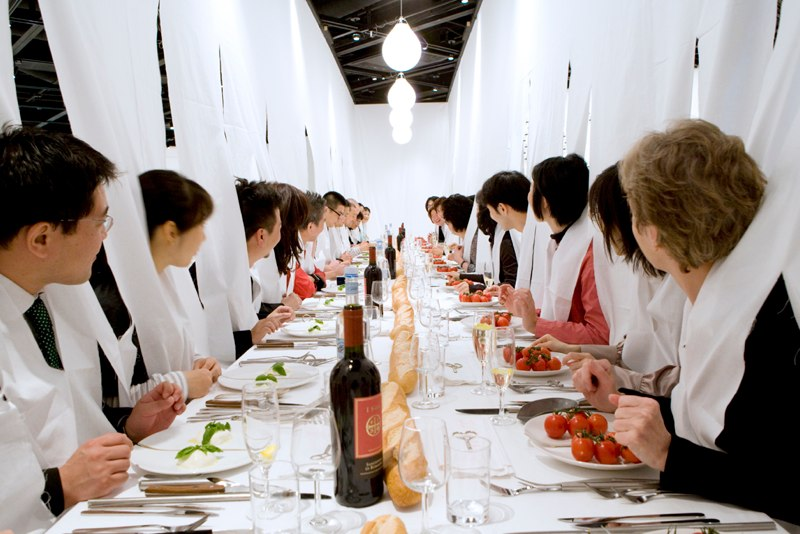
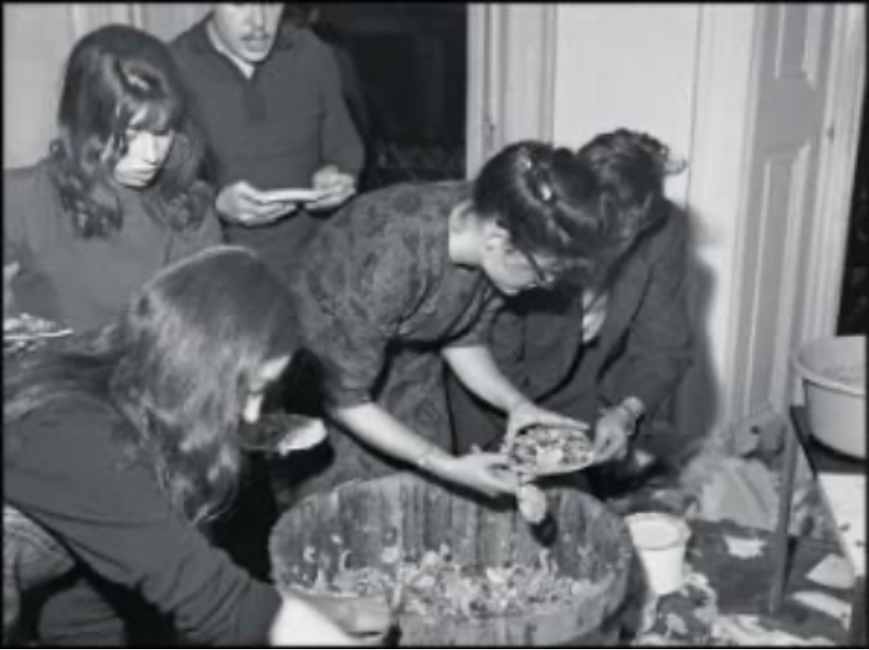
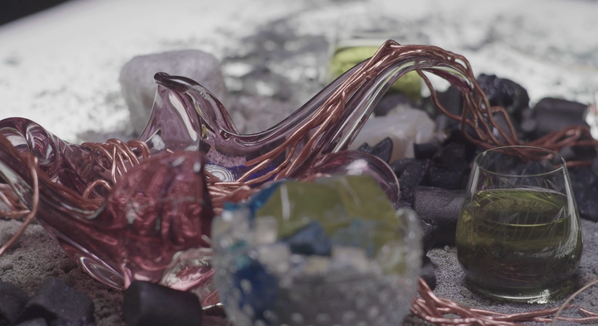

Transforming the Ordinary: A Method for the Participatory Act in Food Design
Mare Odilia de Boer
Recently I made a cake. I tried to make a perfectly fine tasting pastry look disgusting, with a weirdly structured orange coating all around, a firm jelly sheet and a glass like sugar object on top. From there, light pink strands, resembling bodily contents, seemed to grow. I brought it with me, hoping for a reaction. The interaction that followed luckily was not only about the way it looked, but about the confusion and the expectation all before even eating. Then, when everyone dared, the taste was nice, but not the most important thing to discuss. It made us feel connected and in the moment. Something I desire more in this rapidly changing digital age.

Fig. 1 Mare Odilia de Boer, Medium is the Message, 2024
In this ‘always online’ world, every act is measured and could be looked at very objectively. These outcomes and statistics decide what you will be fed on your feed. I do love numbers, but they have little to do with our own meaning and nothing to do with the way we experience (art). Still, social media is something most of us use every day. It feeds us with sense or nonsense, after that it serves us the opinion we are supposed to have, all before we are able to think for ourselves whether it is ever real. Enabling food, something we too face daily, to be a medium will help us get back to the real world – with real connections between people and materials. Food already uses much more senses and therefore automatically creates an authentic experience together with the people around you.
In this thesis I will examine the following question: How can artists/designers use the transformational qualities of food to surprise and enhance audience interaction in order to create coexistence between all life and non-life? For this I hope to create a recipe, enabling you to create participatory food experiences of your own.
Apart from my own finds, opinions and taste, I will be serving you those of others as well. In this thesis I will connect theory to three main artworks: Make a Salad by Alison Knowles, Sharing Dinner by Marije Vogelzang and The Feast by Alicja Rogalska. The analysis will be supported by a wide range of writers, artist and other humans. A take from a conversation between Julia Child and Craig Claiborne about the intimacy asked in food performance. The need, according to Yael Raviv, for disassociation of the food from the act of eating. And the different forms of the spectator's role, researched by Juliane Rebentisch. All these ideas rely on the audience’s cooperation, but what will such participants gain in the end? A feeling of togetherness? Or as Yasaman Sheri suggests, “Do you see what I see? Can you sense what I sense?”. Learning through these shared moments, that senses literally differ, and that all are valid even when not agreed. This becomes an example of what Claire Bishop means by relational art, breaking harmonies and leaving space for conflict and antagonism. By connecting these ideas to three main artworks, they are all bringing it back to, for me, one of the most important requirements in art: the conversation or interaction that it is able to bring.
Surprise and enhance audience interaction
For your starters, I will serve you Sharing Dinner, a work of the Dutch entrepreneur in ‘eating design’ Marije Vogelzang (fig. 2). In 2005, she invited the audience to join her at the table for the first time. From the ceiling above, there are long white pieces of fabric reaching the table, flowing into the tablecloth. People who entered the installation, had to poke their head and arms through the holes of the fabric, leaving their heads inside the space and their bodies outside. On the table, ceramic plates where cut in half and the food presented was without doubt meant for sharing with neighbors. The initial hesitation that the participants might have had, quickly resolved when they simultaneously step into this new area, making it easier to connect with the strangers around them. By fully immersing in the work, they allowed themselves to be surprised by the experience.

Fig. 2 Marije Vogelzang, Sharing Dinner, 2011.
It is noticeable that the work started with some friction, but after stepping in the installation, I expect that these people were able to create a true connection with each other. Which leaves me wondering; how can the (dis)use of social norms create an unexpected experience for the audience?
Social norms are usually ideal to avoid hesitation, our table manners, considering one’s personal space and being polite to help us going through the day. On the other hand, it is restricting our interactions. In Sharing Dinner there is no room for anticipation, any initially reserved attitudes are taken down after the first step into the installation. In this transitioning moment, the participant lives “between the prescribed rules, norms, and orders”, according to the German theatre science professor Erika Fischer-Lichte.1 In this period, they float in their own tension, not knowing how to behave. Juliane Rebentisch, author of Forms of Participation in Art and German professor in Philosophy calls this the “liminal experience”.2 In this experience, you are not really the old you anymore, but surely not the new one either. Vogelzang is able to use this unsure moment.
At first I was nervous thinking people wouldn’t want to sit in this structure
but the moment guests decided to sit down and put their heads through the tablecloth it was as if their masks were falling off. They were opening up and
acting very social and playful.3 - Marije Vogelzang
This is the muscle of her work, creating a space in which, after that liminal period, people can be something else. A different version of themselves, at least in contrast to how they normally would have behaved to a similar interaction, in which they have to sit at a table with complete strangers. Obviously without the playful enhancements Vogelzang uses to break any awkwardness.
Bread on only one side and all the knifes and butter on the other, forces the participants to work together. This ‘intervention’ shifts from the individual liminal period to a collective act, because they become dependent on one another. People had to share their tools to be able to part the food and had to be attentive to the way they moved, since everyone was physically connected by the hanging tablecloth. Peoples’ behavior will only get noticeable when in contact with others and within the moment they have the interaction. It is temporary. But it does show how working together, after a collective unsure moment, can create unexpected connections.
In the installation, the audience clothes where disguised, everyone seemed to wear the same white clothing, they were sitting at the same table and eating the same food. It fades away any former hierarchy and participants lose their ability to control the situation, which allows for equal experiences. The well-known artwork Untitled (free/still) from 1992 by the Thai contemporary artist Rirkrit Tiravanija, carries this as well. Hosting a dinner in the 303 Gallery in the SoHo neighborhood of Manhattan, where he transformed an emptied office into a temporary kitchen and prepared Thai vegetable curry. Anyone could get a bowl, making it a space in which artists, curators, visitors and even homeless all ate the same food, at the same table, sharing a conversation. Tiravanija himself did not like to be in the spotlight and I think he tried to blur the hierarchy between the participants eating together. By allowing the spotlight to be on the connections people gained through the interaction, instead of shining it on individuals.
The expectations of the everyday materials used in Sharing Dinner – the food, cutlery, furniture and actions – are distorted. At first, it lowers the bar for interaction, assuming the participant to be aware of the attributes. Later on, the elements become isolated from their daily context, in which we used to think of it as something purely functional. This thought, together with the fleeting nature of food, makes conservative art critics, like the British Elizabeth Telfer, state it to be ‘low’ art4 in contrast to, in their eyes, more durable ‘high’ art.5 The American philosopher, psychologist and pedagogue John Dewy, on the other hand, thinks that the aesthetic experience of an artwork does not lay in the physical object, but rather in the involvement and interaction. This conflict is mentioned in Eating My Words: Talking About Food in Performance written by Yael Raviv, a New York based director in food events.6 I think that the amount of involvement you receive or ask for in an interactive installation, will make it possible to create a shift in the way we can experience these everyday life happenings.
Recipe for:
Delicious Artwork with (dis)Use of Our Norms and Life
Ingredients:
- social norms
- hesitation
- liminal experience
- falling masks
- fading hierarchy
- everyday materials
You can make an unexpected experience by disusing social norms and putting your audience in a vulnerable position, from where they will be able to be something different then they normally are. And they could even be surprised by their own change, due to the result of unconsciously being in that liminal position. You can steer this result by kindly forcing participants to work together, inciting them to let their guards down and flattening potential hierarchies. Give individuals the chance to use both their social manners and practical manners while handling everyday materials. And more importantly, helping them to be more involved, and to easily be surprised by what one usually considers normal.
Transformational qualities of food
For your main, you will ingest the work of the American performative artist Alison Knowles. Knowles was a founding member of the Fluxus movement, a group of international artists merging different media and disciplines, often performing ‘concerts’ inviting audience participation. Knowles Make a Salad (1962) took place in one of these events. She prepared a massive salad by chopping the ingredients to the beat of live music, passionately tossing it in the air and mixing it on a large piece of sailcloth. Knowles invited people to watch the act of preparing and to enjoy a plate of salad afterwards, which might have surprised them. They finished the artwork by eating it, something I would not have guessed when entering a museum. It starts as ‘only’ a passive performance; the audience is listening to the live music and watching the choppers chop. Later, the spectators become part of the work.

Fig. 3 Alison Knowles, Make a Salad, 1962
In this work, it is visible how the different aspects, like materialism, the fleeting nature of food and the role of the audience creates a social happening. Which made me wonder; How can the transformative qualities of food be the starting point for social experiences?
One of the elements that might be important for the experience is the location. Knowles first performed Make a Salad at London’s Institute of Contemporary Arts Gallery in 1962. She positioned the work in a surrounding with the unwritten contract of how we perceive art: the connection between you and the artist is very restricted and you are expected to receive the art in a passive manner.7 The artists in the Fluxus movement tried to break this, by introducing event score-based instructions. The role of the artist became blurred: everyone able to read could execute it, wherever they are. It does not belong somewhere, only where it happens. Something that does shape the ‘work’ are the expectations of the public depending on the location. A salad prepared in a museum is perceived as an elevated experience, whereas throwing vegetables from a bridge in a park could feel much more accessible.
The distance between the role of spectator and performer is an interesting topic to study in the case of Make a Salad. The performer has control over the cutting, throwing, mixing and organizing. The spectator, after listening and watching, loses some control by eating, they finish the work. They are put in an irreversible position, for themselves as well as for the artist performing, because once it is consumed, it becomes part of them, they are not outsiders anymore. Martha Rosler questioned this, by looking back at the origin of the relation created between audience and artist, how (artistic) practices “moved out of private houses into public arenas where there was such a distance.” This shift changed the way we see value in the things we call art. And how they are different from just ‘everyday life’.8 Yet I think that we can close this gap between art and life, by allowing everyday acts to be in the spotlight again and to be appreciated for what they are.
The visible transformation of the components, the ‘ingredients’, and the noticeable change of behavior, from the ‘eaters’, show the power of the action. The collective consumption of the food and the collective possibility to create a similar experience whenever. Alison Knowles said, “Whenever you are eating a salad, you are performing the piece.”9 Meaning that everyone can initiate the creation of a transformation, from normal ingredients to a shared meal. But what if the spectator is only politely consuming, not even contemplating the possible effects? Whereas some people would feel connected, others might not. Claire Bishop is aware of this. In Antagonism and Relational Aesthetics, she states that participation is not neutral.10 And even though that seems to be the point, that all of the audience has their own experience, it is a burden when trying to create togetherness. Then what is lasting? The durability of the food is down quick after consuming and the experience appears to be only in the moment. So, what do we keep? I hope that the memory of the feeling you had while experiencing the work could be enough.
In addition, the fleeting nature of the material can serve as a critique or awareness on our materialistic consumer society. Even though eating food is literally a form of consumption, and not something we could live without. It is able to reflect on our standards in this age, in which we seem to care less about the waste we produce, and the energy needed for this. I see a similarity in the way we treat other stuff, from wearables, devices and internet to cars, houses and holidays. Transformative materials, such as food, could not keep up with the excess amounts of demands we have. Make a Salad is holding up the mirror by using local food, transparently preparing it and using it both as a performance and to serve people.
The artist transfers the thought of American art historian and curator David Joselit, by having the entire object of the art, the food, eaten by the audience. In The Readymade Metabolized: Fluxus in Life, Joselit writes about the readymade. He describes a form of art in which a mass-produced everyday life object is put in a different context, allowing it to stand out compared to the normal object. Food can take this even further, “a kind of bio-readymade to be literally metabolized both in organic bodies and consumer networks.”11 These two sides; the individual bodies acting from a natural need, and the big market creating an artificial digestion process, is what feeds us not only physically, but also mentally. Both these embodiments show the “intersection of the two distribution systems”12 which is noticeable in Knowles work, but she manages to create an interaction between them.
Recipe for:
Successful Artwork with Interaction and a Transformation of Food
Ingredients:
- location
- (non)distance
- transformation
- durability
- reflecting on materialism
- interaction of systems
You can shape the initial expectations of your dish by using the location as a tool, just like Knowles did in Making a Salad, the place will give context to the work. It helps you to define the relation between you (the artist) and the spectator, using the unwritten rules specified through the location. By treating everyday life materials in the way mentioned in this recipe, you will manage to create interesting or surprising interactions, since you are now able to initiate this transformation. Food is something we cannot live without, so let’s try to be conscious with the fleeting materials we have, leave them for our own digestion, not a polluting artificial one. So, you can keep using the transformative qualities of food to enhance social experiences.
Create Coexistence
For dessert you will eat The Feast, a film made by Polish interdisciplinary artist Alicja Rogalska, inspired by the conservations she had with academics of the Faculty of Social Sciences in Essex about climate catastrophe. The film documents four people, somewhere in the future, around a table. The dinner guests pretend to consume fossil fuels and other substances once used in energy production, including coal, crude oil, diesel, lithium and uranium. While eating, they talk about the previous strategies executed to move away from polluting energy sources, used to avert climate catastrophe. The work celebrates, prematurely, the end of human reliance on fossil fuels, with the act of a dinning ritual.13 On the table I see only extreme and sickening looking substances, copper-colored strands and dust in strange colors, yet the four gathering around the table seem to enjoy this way of commemorating the so-called past.

Fig. 4 Alicja Rogalska, The Feast (still from video), 2022
The film questions the role of humans towards all the non-human entities and how their relation could change by allowing grieve, taking care and being solidary with what is or will be around us. I wonder; How can speculative ideas about different entities create coexistence?
A woman opens the dinner by saying;
“We need to acknowledge how important it is to just mourn what was lost.”
“It is our generation who is going to make sure that does not happen again.”
“It is for all, human, non-human, entities, animals, plant species, forests,
rivers and whole ecosystems we lost.”14
Sharing the grieve as a collective, not only human loss, but especially the mourning for non-human entities and ecosystems that are lost. Over time, from now till that time in the future, people learnt how to see this. For me, the sentence; ‘grief is the price you pay for love’, brings me comfort when feeling sorrow, because I know I was consciously enjoying everything I had, when I had it. But I think we are not aware of all that the non-human has given us, or at least, we are lacking the attention to everything around us that is giving this ‘love’, whether we deserve it or not.
By reversing the act, giving back some love and taking care of the world around us, we can share this either conscious or unconsciously by enjoying moments with other entities or ecosystems. In A Manifesto for Sensing in the Age of Sensor, the Danish creative director Yasaman Sheri wrote “Beyond the human-centered, we ought to consider other species and the earth as a valuable place we share not only with our own diverse human cultures, but with other living things.”15 She ought for collective sensing, raising the questions “Do you see what I see? Can you sense what I sense?” not only to humans, but anything able to sense. With this, she invites individuals to partake in empathy building. An act of solidarity, not just a feeling, but something you do.
I realize that solidarity is not just about helping others, it’s also about respecting all that once became a part of our life. But also, thinking about what could become a part of our life later on. The Dutch artist and Creative Chef, Jasper Udink ten Cate created a speculative world called the Future Food City.16 Taking his dinner guests along, he shows them his utopian ideas of harvesting food in a healthy and biodiverse world. The participants eating from a table, on which a miniature version of the ideal city is build, can see themselves living there. And so, they could relate to the need of taking care of the world around them. It is similar to Rogalska’s view, both try to tell us to change, to live with our environment, not just from it.
This is what I mean with coexistence, simultaneously living together for hopefully a very long time. Even though not all of the entities and ecosystems will join us at the table one day, its vulnerabilities could have us never sitting at a table again. The feast does not clearly show us how to prevent it, but it opens our eyes. Let’s hope wide enough.
Recipe for:
Fulfilling Artwork with Solidarity towards All Entities
Ingredients:
- sharing grieve
- taking care
- entities and ecosystems
- solidarity
- coexistence
You can try to create coexistence by acknowledging the love non-human entities are giving us, by doing so you will see the importance of taking care of it, giving some back. This can make you aware of what you have, while still having it. And to show how being solidary is to live with our environment, not from it.
Conclusion
Food, as a transformative medium, allows artist and designers to close the gap between spectator and performer, turning personal happenings into shared awareness and coexistence between all life and non-life. These experiences can be shaped by the fluid qualities of food and show how an artwork can shift from a passive performance to an interactive action. But also how the location puts the work into context and the awareness it creates towards materialism, consumption and the underlying networks.
To create an interaction or awareness like this, the act of sharing is important; sharing the food, sharing a conversation and sharing the moment. This is only possible when fully immersed by a work, allowing a liminal experience, where the collective unsure moment creates different connections. These new connections fade away former hierarchies between spectators, but also between the artists and maybe even objects. The expectation of the objects we use daily made from everyday life materials, changes when it is isolated and used in a different context. I think you can do all of this perfectly but still do not receive the wished outcome, you will be dependent on the amount of involvement you get from the people you ask.
A way to enhance this involvement, could be by telling a story. A speculative world for instance, in which we could live when we either do or do not change how we use everything around us. This awareness creates the possibility to realize solidarity with non-human entities and how we can live in co-existence.
Bibliography
Bishop, Claire. “Antagonism and Relational Aesthetics.” October 110 (2004): 51–79. http://www.jstor.org/stable/3397557
Dick Higgings. “Intermedia.” 2021. https://dickhiggins.org/intermedia
Doyle, Denise. Digital Embodiment and the Arts: Imagination, Space, and Immersive Technologies. Intellect, 2024. https://www.jstor.org/content/oa_chapter_monograph/jj.21900478.8?seq=1
Fairs, Marcus. “Food is "the most important material in the world" says Marije
Vogelzang”, Dezeen, July 8, 2014. https://www.dezeen.com/2014/07/08/marije-vogelzang-eating-designer-interview-food-course-design-academy-eindhoven/
Figlerowicz, Marta., Padma D. Maitland, and Christopher Patrick Miller. “Object Emotions.” no. 1–2, 2016. https://doi.org/10.5250/symploke.24.1-2.0155
Friedman, Ken. The Fluxus Reader. ACADEMY EDITIONS, 1998.
Gardoni, Antonio G., Food by Design, Deconstructing in Cooking, Booth-Clibborn Editions, 2002.
Joselit, David. “The Readymade Metabolized: Fluxus in Life,” ResearchGate, 2013. https://www.researchgate.net/publication/312268749_The_readymade_metabolized_Fluxus_in_life
Juliane Rebentisch, and Translated by Daniel Hendrickson. “Forms of Participation in Art.” Qui Parle 23, no. 2 (2015): 29–54. https://doi.org/10.5250/quiparle.23.2.0029
Miller, Merlyn. “Pepi de Boissieu's Food Experiences Celebrate the Ritual of Dining,” MOLD, June 4, 2018. https://thisismold.com/event/experiences/pepi-de-boissieus-food-experiences-celebrate-the-ritual-of-dining
Pearlman, Ellen. “Interviews With Alison Knowles, July-October 2001, New York City” Interview by Ellen Pearlman. The BROOKLYN RAIL, January/February, 2002. https://brooklynrail.org/2002/01/art/interviews-with-alison-knowles-july-october-2001-new-york-city/
Raviv, Yael. “Eating My Words: Talking About Food in Performance,” ResearchGate, 2010. https://www.researchgate.net/publication/266557733_Eating_My_Words_Talking_About_Food_in_Performance
Rosler, Matha. “What Sort of an Art Is Cookery? Are the Great Chefs All Dead?.” e-flux Journal, no 128, June 1, 2022 https://www.e-flux.com/journal/128/473004/what-sort-of-an-art-is-cookery-are-the-great-chefs-all-dead
Rothman, Roger. “Fluxus, or the Work of Art in the Age of Information”, no 1-2, Posthumanism, 2015.
Sheri, Yasaman. “A Manifesto for Sensing in the Age of Sensors,” MOLD no 04, May 14, 2019. https://thisismold.com/object/connected/yasaman-sheri-manifesto-for-sensing-in-the-age-of-sensors
Tate, “Alison Knowles – ‘I’m Making a Giant Salad’ | TateShorts”, YouTube video, 3:06 September 3, 2008, https://www.youtube.com/watch?v=lmqvnIXnmyM
-
↩︎
Juliane Rebentisch, Forms of Participation in Art, 45
-
↩︎
Juliane Rebentisch, Forms of Participation in Art, 45
-
↩︎
Marije Vogelzang, https://www.marijevogelzang.nl/past-projects/sharing-dinner/, 2008
-
↩︎
‘low’ art = film, photography, internet and food
-
↩︎
‘high’ art = paintings, sculptures and literature
-
↩︎
Yael Raviv, Eating My Words: Talking About Food in Performance, 13
-
↩︎
Ken Friedman, The Fluxus Reader,107
-
↩︎
Matha Rosler, What Sort of an Art is Cookery? Are the Great Chefs All Dead?, https://www.e-flux.com/journal/128/473004/what-sort-of-an-art-is-cookery-are-the-great-chefs-all-dead
-
↩︎
“Alison Knowles – ‘I’m Making a Giant Salad’ | TateShorts”, Posted September 3, 2008, by Tate, YouTube, 3:06, https://www.youtube.com/watch?v=lmqvnIXnmyM
-
↩︎
Claire Bishop, Antagonism and Relational Aesthetics, 62
-
↩︎
The Readymade Metabolized: Fluxus in Life - David Joselit, 192
-
↩︎
The Readymade Metabolized: Fluxus in Life - David Joselit, 192
-
↩︎
Alicja Rogalska, The Feast, https://vimeo.com/772029670
-
↩︎
Alicja Rogalska, The Feast, https://vimeo.com/772029670
-
↩︎
Yasaman Sheri, A Manifesto for Sensing in the Age of Sensor, https://thisismold.com/object/connected/yasaman-sheri-manifesto-for-sensing-in-the-age-of-sensors
-
↩︎
Jasper Udink ten Cate, Future Food City, 2020